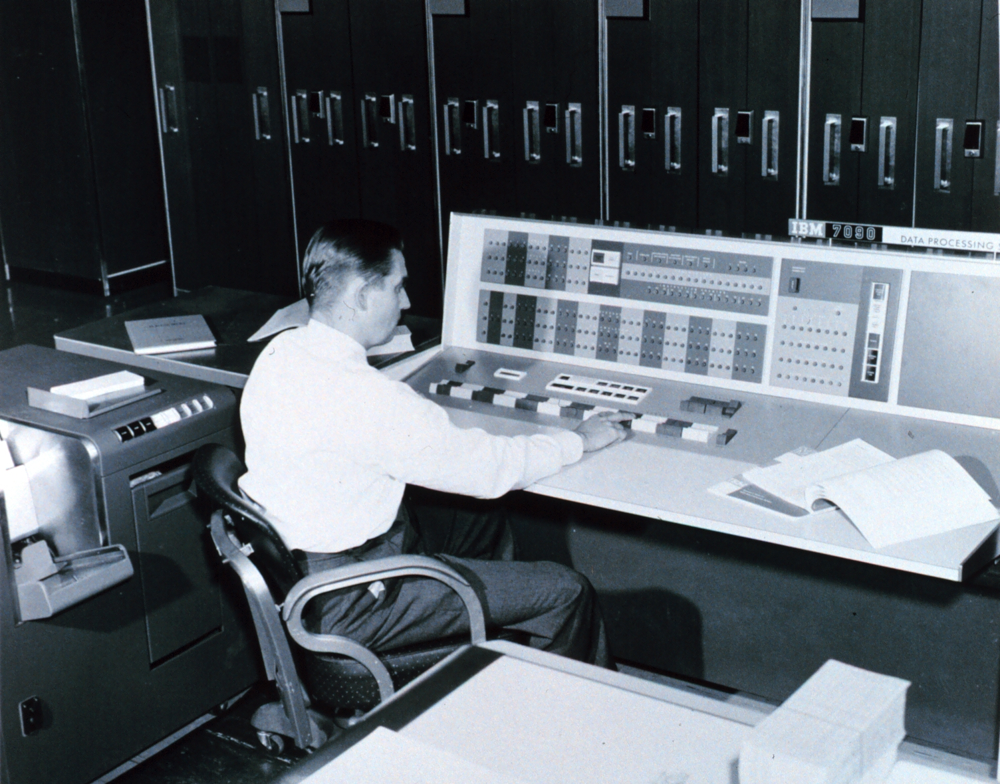

What I do
I run logistics at IVB Media Services, and I built the software it runs on.
Inventory, orders, purchasing, QuickBooks and sales all live in one platform I designed, deployed and keep running. Outside work I build automated research for prediction markets, and I'm working through an MS in Data Science at CU Boulder.
The systems below run every day. None of them is a class project.

Selected work
At IVB Media Services
- Operations platformInventory, orders, receiving, roles2026
- QuickBooks syncImports every 30 minutes2026
- Delivery signaturesSigned on a phone, invoice queued2026
- eBay ordersShip, post tracking, ready to bill2026
- Sales lead engineFinds buyers, drafts the first email2026
- PurchasingDistributor prices side by side2026
- Catalogue clean-up48 SKUs merged, 39 categories2026
Research and study
- Trading research systemAutomated Kalshi trading, hard limits2026
- Strategy testingFrozen tests before any money2026
- Data science projectsTen models and apps on GitHub2026
- NYPD incident reportR analysis of open city data2024
| Item | Bin | On hand |
|---|---|---|
| LTO-9 tape, 18 TB | A-04 | 140 |
| G-RAID Shuttle 8 | C-11 | 3 |
| Portable SSD, 4 TB | B-02 | 26 |
| Enterprise HDD, 20 TB | D-07 | 18 |
| LTO barcode labels | A-01 | 60 |
Every unit received by serial number.
| 1:30 pm | Sales orders | +4 |
| 1:30 pm | Purchase orders | +1 |
| 1:30 pm | Closed POs | 2 |
| 1:00 pm | Sales orders | +2 |
| 1:00 pm | Unmatched SKUs | 0 |
Read-only. QuickBooks stays the book of record.
Signed by Sample Customer · 2:14 pm
"OK to invoice" email queued to the office.
| Order | 12-0000-4471 |
| QuickBooks SO | 70108 |
| Tracking to eBay | Posted |
| Delivery signature | Auto |
| Invoice email | Sent |
To: Post supervisor, sample studio
Saw you're hiring a post production manager. When a show wraps, we rent LTO-8 and LTO-9 decks by the week so the archive doesn't need a deck purchase.
Who handles drive and tape orders on the new team?
Written by one model, checked by a second. Only claims IVB can prove.
| Distributor | Cost | Stock |
|---|---|---|
| Distributor A | lowest | 12 |
| Distributor B | +3% | 4 |
| Distributor C | +6% | 0 |
Sample figures. Cheapest in-stock source first.
| LTO9-TAPE | → | LTO-9 tape, 18 TB |
| LTO 9 Ultrium | ||
| lto-9 18tb |
Every active item in one of 39 categories.
| Drawdown 5% | Audit |
| Drawdown 10% | Half size |
| Drawdown 15% | Paper only |
| Daily stop | On |
| Cycle | Every 15 min |
| Research fronts | 9 |
| Variants, rules fixed in advance | 103 |
| Passed the frozen test | 0 |
| Money put on a failed idea | $0 |
A no is a result.
- A/B test analyzer
- Anomaly detection
- Churn predictor
- Image classifier
- Named entity recognition
- Recommender system
- Sentiment API
- Stock forecaster
- ETL pipeline
Open data from NYC: incidents by borough, hour and year, with a simple model of the trend.
Coursework, CU Boulder, 2024.
My systems, right now
Each one runs on a schedule. Move the clock to see what's due at any hour, in Pasadena time.
—
- QuickBooks import every 30 minutes, 8 a.m. to 6 p.m.
- Sales refresh nightly at 2:30 a.m.
- Trading cycle every 15 minutes, all day
- Trade records daily at 5:00 a.m.
- Daily monitor daily at 6:07 a.m.
- Model retrain Mondays at 6:00 a.m.
It opens at the current time in Pasadena. The schedules are the real ones; the systems themselves stay private.
Experience
- Inventory and Logistics Coordinator, IVB Media ServicesNorth Hollywood. Built the operations platform; run shipping and receiving.2025 – now
- Marketing Associate, Rosewood Revitalization GroupEmail campaigns and outreach for a food pantry and a summer music camp.2021
- Marketing Team Member, Palouse PropertiesWebsite redesign and a rental-season marketing plan.2020
- Sports Journalist, Page6SportsRan the college football section; a feature carried by Bleacher Report.2016 – 2018
Education
- MS in Data Science, CU BoulderIn progress, online2027
- BS in Business, Marketing, University of Idaho2021
Tools I use every week
- Python, SQL, Rdata
- FastAPI, PostgreSQL, Next.jsapps
- Docker, Linux, a QNAP NASrunning it
- Cloudflare Tunnels, R2, Pagesaccess
- QuickBooks Desktop, eBay APIbusiness
- Claude Code, Codex, local modelsAI tools
How I work
I studied marketing at the University of Idaho, and before that I wrote about college football. I didn't start out as an engineer, and I still begin every project with the person who has to use it.
At IVB I started by running shipping and receiving. What I needed to know lived in QuickBooks, spreadsheets and email, so I built one place for it. Then I kept going, one real problem at a time: receiving by serial number, signatures at the counter, prices from every distributor.
I trust tests over hunches. In my trading research most ideas fail on data they have never seen. I count that as a result, because it is money that never went into a bad idea.
The master's degree is the foundation under the work I already do every day: statistics, machine learning and data engineering, learned properly.
David AdamsPasadena, California
Contact
If you're building something that runs on data and needs someone to make it work, write to me.


.jpg){kind=link}